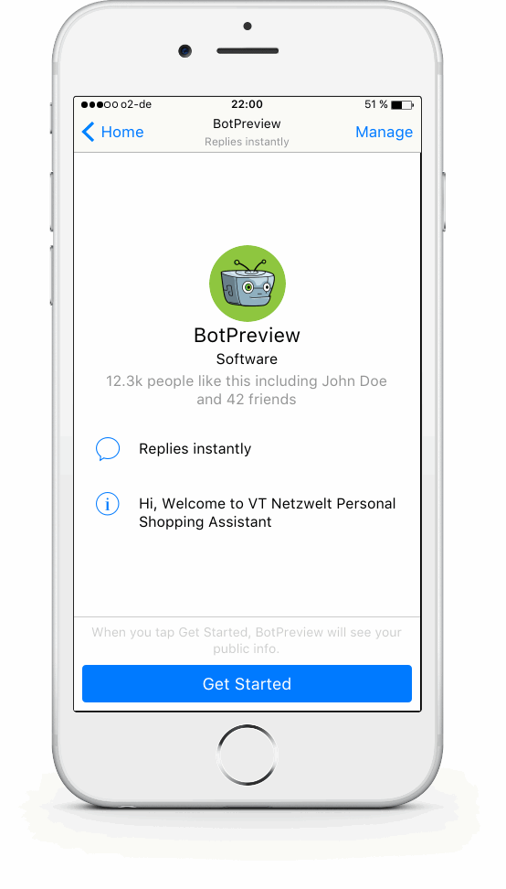

Xu hướng định hình tương lai của phát triển Web
Trong thời đại công nghệ ngày một phát triển hiện nay, việc tích hợp trí tuệ nhân tạo (AI) vào trong phát triển web, hay như việc ra đời của Progressive Web Applications (PWA) để thay thế các ứng dụng di động gốc đã mang đến một làn gió mới cho việc phát triển web.
Vai trò của trí tuệ nhân tạo (AI) trong thiết kế
và phá triển Web
AI bây giờ không còn chỉ là một khái niệm xa vời,AI đang được sử dụng rộng rãi trong hầu hết mọi ngành công nghiệp bao gồm sản xuất, vận chuyển, hàng không và trong nhiều trang web và ứng dụng công nghệ. Những ứng dụng của AI đối với web rất cụ thể:
Chatbots
Chatbots không có gì ngoài các đoạn code được phát triển dựa trên Natural Language Processing (NLP) và Machine Learning.
Giả sử bạn đang tìm mua cho mình một đôi giày thể thao. Thông thường, mọi người sẽ lên Google tìm kiếm và được đưa tới một trang web. Tại đây, đầu tiên bạn sẽ tìm kiếm giày thể thao, và trong phần bộ lọc, bạn có thể chọn các tùy chọn khác nhau theo yêu cầu của mình như kích thước, màu sắc, phạm vi giá, v.v. Sau khi trải qua nhiều lựa chọn, bạn đưa ra lựa chọn cho mình. Sau đó, lại có một loạt các hành động cần được thực hiện như checkout, nhập thông tin thanh toán trước khi bạn thực sự có thể đặt hàng. Tuy nhiên, với việc ứng dụng Chatbots, tất cả các hành động trên sẽ được thay thế bằng một chuỗi Q&A. Cụ thể sẽ được minh họa như sau:
Trải nghiệm người dùng tốt hơn
AI sẽ giúp các nhà thiết kế UX giảm thời gian phân tích bằng cách chuyển đổi các kho dữ liệu lớn của mình thành thành các quy tắc, thói quen của người dùng. Nói cách khác AI sẽ giúp thống kê cảm xúc lúc duyệt web của người dùng để những nhà thiết kế tham khảo và tận dụng kết quả đó.
Tìm kiếm dựa trên giọng nói
Tìm kiếm dựa trên giọng nói (Voice-based search) gần đây đã tạo đà mạnh mẽ nhờ sự ra đời của nhiều trợ lý ảo khác nhau như Google Assistant, Amazon Alexa, Apple Siri,...
Với sự gia tăng trong việc sử dụng các digital assistants này, việc phát triển trang web cần xem xét tới sự phát triển của tính năng tìm kiếm dựa trên giọng nói.
Công nghệ dựa trên giọng nói này sẽ trở thành một nhu cầu thiết yếu trong mua sắm online, và các doanh nghiệp thương mại điện tử có cái nhìn cụ thể hơn về công nghệ này.
Vai trò của Progressive Web Apps (PWA) đối với thiết kế và phát triển Web
PWA sử dụng các cải tiến tiến bộ cấp các tính năng tương tự như một ứng dụng di động.
PWA, kết hợp với Android Instant Apps cho phép bạn tạo ra các ứng dụng lung linh mà không cần phải cài đặt trên thiết bị. Thậm chí các ứng dụng này còn cung cấp quyền truy cập ngoại tuyến vào nội dung.
Sự cần thiết của PWA
Tất cả các vấn đề trên đều có thể được khắc phục bởi PWA. Dưới đây là một số tính năng hàng đầu của PWA.